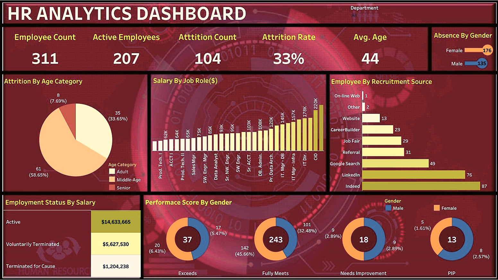
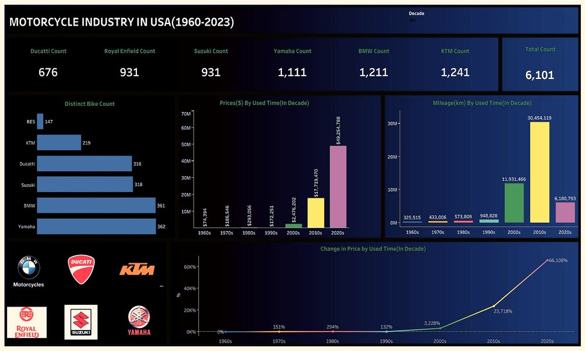
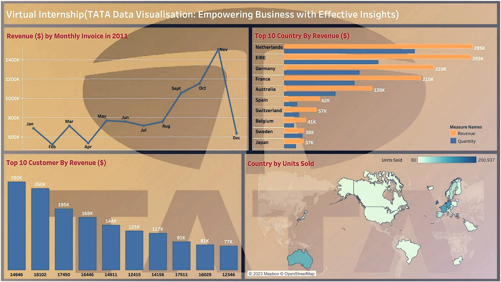
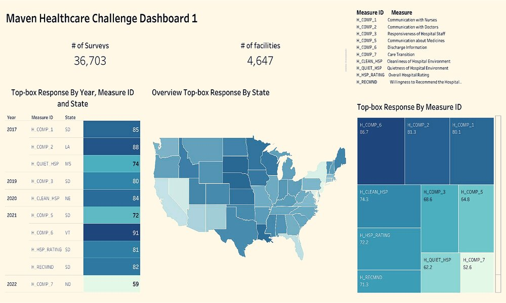
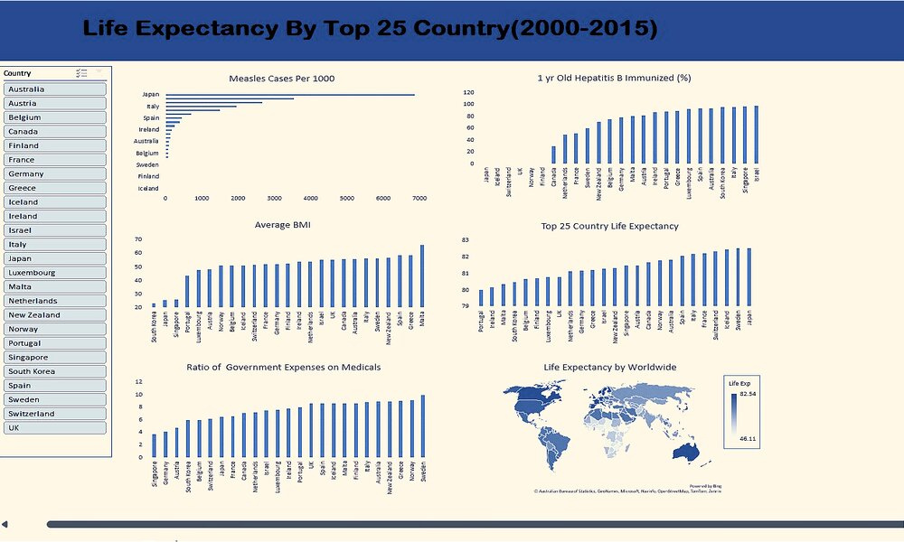
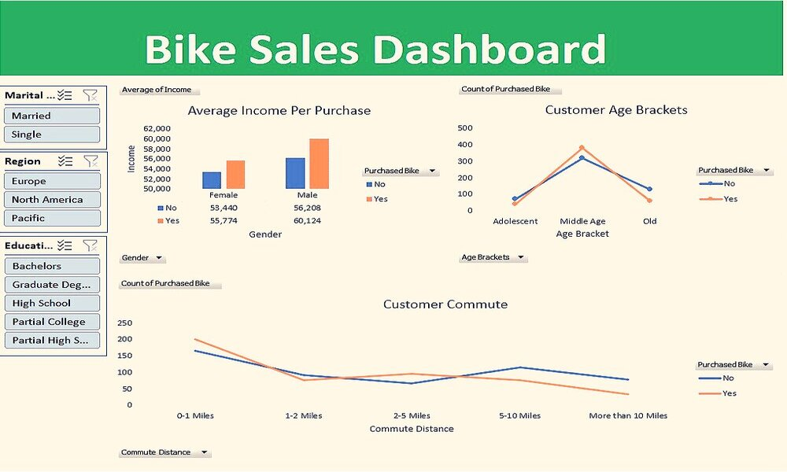
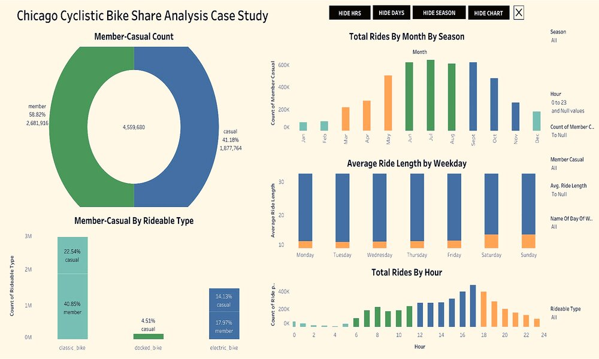

This is the first project being carried out as a Data Analyst (Intern) at MeriSKILL. A Sales Data was given to me for analysis in order to gain insights into the record.
Exclusively, SQL Server was used to query the dataset for general cleaning, formatting, wrangling, and analysis prior to exporting it into Power Bi
for Data Visualization.

This project analysed and visualized the trends, market and gain insights into the motorcycle industry in USA between 1960 - 2023.
Seven major motorcycles brands that were studied include Suzuki, BMW, Royal Enfield, Yamaha. Taleau is used for data visualization

Performed the task of analysing and visualizing carbon emission by Country from 18th century to 21st century(till 2014). The raw data was previously cleaned, formatted and standardized in excel before being analysed in SQL Server.
Dashboards and stories were made in Tableau. You can navigate through the tableau story for sequence of visualizations that convey information

TATA Virtual Internship Experience Program to empower businesses with effective Insights. This Virtual internship was powered by Forage, and my role was to act as a Virtual Data Visualization Specialist where
Tableau was majorly utilized to manipulate and visualized TATA Global Retail Stores Dataset. The target audience are The Chief Executive Officer (CEO) and Chief Marketing Officer (CMO) needed answers to 4 questions
through Data Visualization in order to gain impactful and actionable insights that will lead to data-driven decision making to empower a chain of business in TATA.

This project is a Maven’s Healthcare Challenge. Datasets were provided by American Hospital Association (AHA) which is a national organization that represents hospitals and their patients.
In the challenge, Hospital Consumer Assessment of Healthcare Providers and Systems (HCAHPS) survey results for the last 9 years (2015-2023) were analyzed. The purpose of this project is to provide a standardized survey
instrument for measuring patients’ perspectives on hospital care, and one of its three main goals is to establish incentives for hospitals across the country to improve the quality of care being rendered.

Utilized Excel exclusively to analyze life Expectancies of 177 countries between 2000 and 2015. The top 25 countries with highest life expectancy were thoroughly analysed in excel.
The interactive dashboard is named "Dashboard.xlxs" in GitHub repository. You can apply filter (country) yourself by pressing and
hold ctrl and then select countries of choice to gain insights.

In this project, I cleaned, formatted, standardized and analysed Bike Riders' Profiles in Excel. In this project, Bike riders' profiles such as their marital status, gender, cars owned,
income, education, age, bike purchase and etc are analysed in excel. Slicers, pivot table and dashboard were created for the project.

This is a final project in the Google Data Analytics Professional Certificate Project. Real-world tasks of a data analyst was performed. All the steps in data analytics that were taught
during the course were executed. I acted the role of a Junior Data Analyst in the marketing department at Cyclistic Bike Share Company base in Chicago.